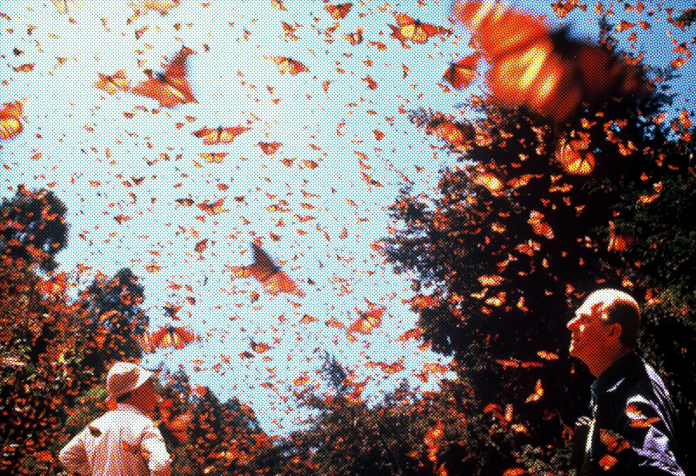
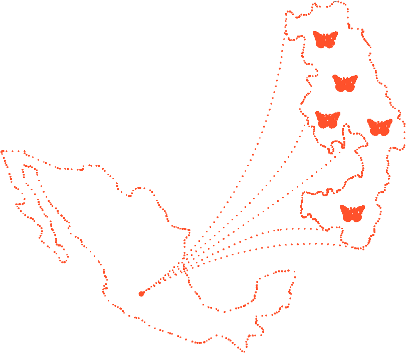

Each spring millions of monarch butterflies will leave their over-wintering grounds and begin a year-long journey that will take them across North America and back. They leave for a journey in which only their great-grandoffspring will complete.
The eggs for the first generation of monarch butterflies after the winter season are laid, the offspring of the migrating generation returning from Mexico.
Through the month, eggs will gestate and hatch into caterpillars that will eat milkweed, doubling and tripling in size as they build up their body reserves.
Mature caterpillars will form crysalises, dissolving their bodies as they transform throughout the month and emerging as adult butterflies.
These butterflies will continue their journey north, passing the southern states.
The second generation of monarchs will gestate and hatch into caterpillars that will eat milkweed, doubling and tripling in size as they build up their body reserves.
The second generation of monarchs will form crysalises, then emerge as fully formed butterflies. They will continue north as far as Canada and the American northeast.
Monarchs are expected reach their summer breeding grounds in June, and citizen scientists are encouraged to report monarch sightings throughout late spring and early summer to track migration patterns.
The third generation of eggs begin to be laid and develop into caterpillars in July, enjoying warm weather and abundant foilage across the North American continent.
By August, the third generation of monarchs enterr their crysalis phase, then emerge as the last generation of butterflies before the migratory generation.
In September, the migratory generation's eggs are laid, and the caterpillars that emerge will begin to detect environmental cues like decreasing daylight and temperatures. These cues cause stay with the caterpillar through its crysalis stage.
The migratory generation of butterflies emerge from their crysalises having been 'programmed' to migrate. They are developmentally stunted, and instead of looking for mates they will begin their journey south, towards Mexico.
It is still unknown how monarchs are able to find their way back to their ancestral over-wintering grounds, but researchers believe their navigational abilities come from a combination of pheremonal, environmental, and physiological cues.
By November, monarchs will begin to reach the Mexican Monarch Biosphere, where three generations ago their forebears spent the winter. These monarchs will cluster on oyamel fir trees, with enough monarchs clustered together that the sheer weight of the combined butterflies will cause branches to bend.
Monarchs will remain clustered in oyemal fir trees through the winter, reaching a hibernation-adjacent state. They metabolize slowly due to the cool temperatures in the mountains, fueled only by nectar they had feeded on while migrating.
Through January, monarchs will continue roosting in the fir trees. They require low enough temperatures to maintain low levels of metabolization, but they are also suseptible to freezing. The oyamel fir forests of the biosphere reserve are uniquely equipt to home them through the winter, but there are also smaller populations of monarchs that will over-winter in eucalyptus trees in California.
Monarchs will continue to hibernate through February,w
When the weather grows warmer, the migratory monarch butterflys will begin to depart, completing the final leg of their journey and mating. And thus the cycle repeats itself.
The 56, 259 ha biosphere lies within rugged forested mountains about 100 km northwest of Mexico City. Every autumn, millions, perhaps a billion, butterflies from wide areas of North America return to the site and cluster on small areas of the forest reserve, colouring its trees orange and literally bending their branches under their collective weight. In the spring, these butterflies begin an 8 month migration that takes them all the way to Eastern Canada and back, during which time four successive generations are born and die. How they find their way back to their overwintering site remains a mystery.
FIGURE 1
RAHHHH
The Monarch Butterfly Biosphere Reserve World Heritage property protects key overwintering sites for the monarch butterfly. The overwintering concentration of butterflies in the property is a superlative natural phenomenon. The millions of monarch butterflies that return to the property every year bend tree branches by their weight, fill the sky when they take flight, and make a sound like light rain with the beating of their wings. Witnessing this unique phenomenon is an exceptional experience of nature.
KEY LOCATIONS:
1. SIERRA CHINCUA
2. SIRRA CAMPANARIA
3. CHIVATI-HURACAL
4. LOMAS DE APARICIO
5. CERRO PELON
The Monarch Butterfly Biosphere Reserve World Heritage property is a popular destination for tourists and researchers alike, who travel from all across the world to experience this world-changing natural phenomenon.
FIGURE 1
RAHHHH
FIGURE 1
Monarch butterflies flying between trees via Edward Parker, World Wildlife
— Dr. Karen Oberhauser, Monarch Butterfly Expert
FIGURE 2
1. Feleabane
2. Penstemon
3. Dandelion
4. Indian Blanket
5. Milkweed
6. Goldenrod
7. Globemallow
8. Texas Columbine
The Monarch Joint Venture is a nonprofit organization building a national partnership of federal and state agencies, other nonprofits, community groups, businesses, and academic programs working together to conserve monarch butterflies and other pollinators.
monarchjointventure.orgThe Monarch Larva Monitoring Project has a mission to better understand the distribution and abundance of breeding monarchs and to use that knowledge to inform and inspire monarch conservation.
mlmp.orgThe Journey North strives to inspire people from across North America to help track wildlife migration and seasonal change to foster scientific understanding, environmental awareness, and land ethic.
journeynorth.orgMonarch Watch is an education, conservation, and research program based at the University of Kansas that focuses on the monarch butterfly, its habitat, and its fall migration.
monarchwatch.orgThe North American Butterfly Association is a transnational wild-life conservation nonprofit working to create a world where butterflies thrive, for the benefit of nature and people.
naba.org